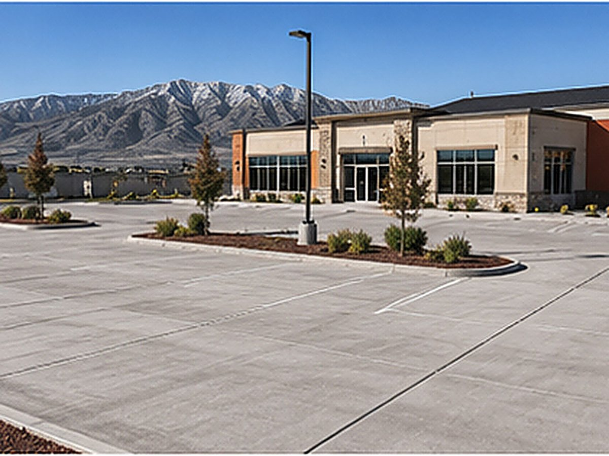

Commercial concrete
Parking areas, approaches, ADA ramps, dumpster pads and sidewalks for valley businesses — built for traffic and loads, scheduled around your operation.

Commercial concrete carries more traffic and heavier loads than residential work, and it has to do it while a business keeps running. As the Tooele Valley grows, so do the storefronts, offices, shops and facilities that need durable, compliant, well-poured flatwork.
We pour commercial concrete on a prep-first standard, build to code, and work around your hours so the project disrupts your operation as little as possible.
We handle parking areas and stalls, drive approaches and aprons, ADA ramps and accessible routes, dumpster and equipment pads, loading areas, walkways and general commercial flatwork. Whether it's a new build, an expansion or replacing a worn-out lot, we scope the job to what your property and traffic actually need.
Commercial surfaces see constant vehicle traffic and, in places like loading zones and dumpster pads, very heavy concentrated loads. We pour the thickness and reinforcement those uses demand, on a base prepped to carry them, so the concrete holds up to years of hard use instead of breaking down early.
Commercial work has to meet accessibility and building-code requirements — ramp slopes, landing dimensions, cross-slopes and detectable warnings where required. We pour to those standards so your site passes inspection and serves all of your customers safely.
A torn-up entrance or closed lot costs a business money, so timing matters. We plan the work to keep access open where we can, phase pours so part of your lot stays usable, and work early, late or on weekends when that's what it takes to limit disruption. We'll map out a realistic schedule before we start.
We bid commercial work from your plans or a site walk, with the scope, thickness, reinforcement and any tear-out spelled out so you know exactly what you're getting. Pricing scales with the size and demands of the job. Reach out and we'll put together a clear, itemized bid for your project.
Common questions
Yes. For businesses that can't lose access during the day, we schedule pours early, late or on weekends and phase the work so part of your lot or entrance stays usable. We plan the timing with you up front to keep disruption to a minimum.
We do. ADA work has specific requirements for slope, landings, cross-slope and width, and we pour ramps and accessible routes to meet them so your site is compliant and passes inspection.
Generally thicker and more heavily reinforced, because it carries more traffic and heavier loads. Parking areas, approaches and especially dumpster and loading pads are built up accordingly. We spec each area to its actual use rather than pouring everything the same.
Yes. We provide itemized bids from your plans or a site walk, with scope, dimensions, thickness, reinforcement and tear-out clearly laid out, so you can compare apples to apples and know what's included.
We can. We remove the failed concrete, correct whatever caused it to fail underneath — base, drainage, grading — and pour new flatwork built to last, phasing the work to keep your business running where possible.
Related work
Heavy-duty slabs and pads for shops and equipment.
Structural pours for commercial builds and additions.
ADA-compliant walks and approaches for your site.
Free, no pressure
Call or text for the fastest answer — most estimates are scheduled within a day.
(385) 469-5163